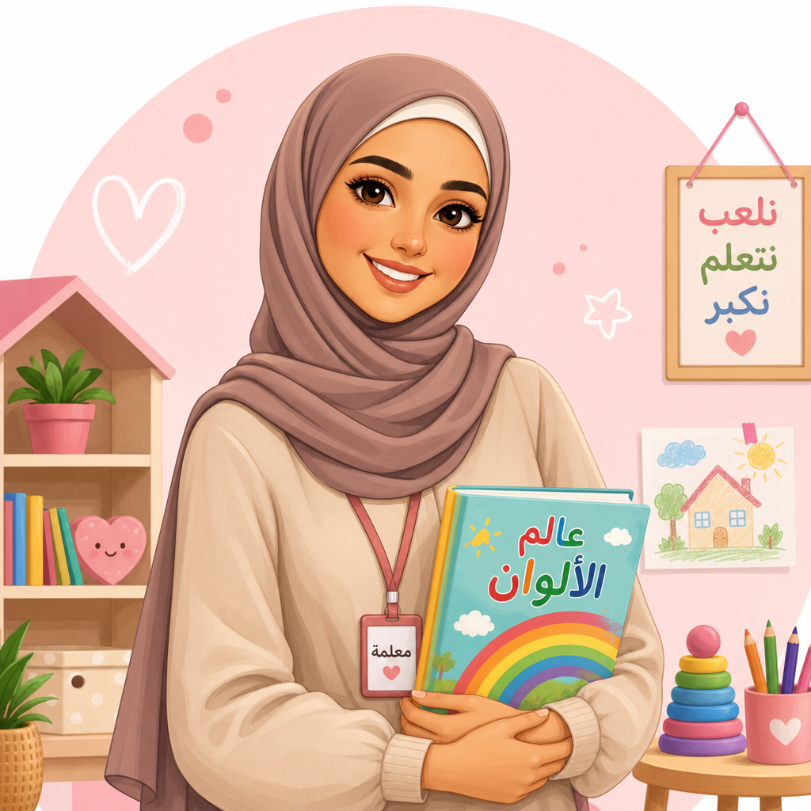

مريم الخطيب
قائدة برنامج الصغيرة، ٩ سنوات خبرة.
🎵 موسيقى🍼 رعاية الرضع
معلمات مؤهلات، ممرضة حاضرة، وأخصائية نفسية تتابع الانتقال، اللعب، والروتين الاجتماعي.

قائدة برنامج الصغيرة، ٩ سنوات خبرة.
معلمة المستكشفين، ٦ سنوات خبرة.
معلمة الروضة والفن، ٨ سنوات خبرة.
مساعدة صف وحركة إبداعية، ٥ سنوات.
معلمة لغة وتهيئة مدرسية، ٧ سنوات.
رعاية صباحية وتنظيم الروتين، ٤ سنوات.
فحص صباحي، متابعة حرارة، وتواصل مباشر في الحالات الصحية.
دعم الانتقال، ملاحظة اللعب الاجتماعي، وخطط تهدئة فردية.